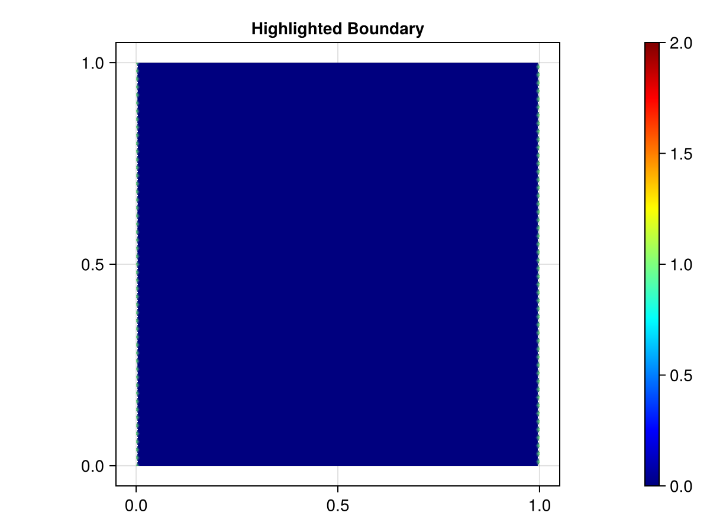

Brusselator
This Brusselator example is adapted from DifferentialEquations.jl's page on the same topic. The Brusselator is a autocatalytic chemical reaction that takes place between two reactants U and V.
Dependencies
using CairoMakie
import CairoMakie: wireframe, mesh, Figure, Axis
using Catlab
using CombinatorialSpaces
using ComponentArrays
using DiagrammaticEquations
using Decapodes
using LinearAlgebra
using MLStyle
using OrdinaryDiffEq
using GeometryBasics: Point2, Point3
Point2D = Point2{Float64}
Point3D = Point3{Float64}WARNING: using ComponentArrays.Axis in module Main conflicts with an existing identifier.The Model
We establish the model for the Brusselator, with the two reactants U and V, modeled as residing on the vertices of the mesh. The equations encode a reaction that occurs independently at each point coupled with a diffusion term as well as a source term F in the case of U. Here α denotes the rate of diffusion for both reactants.
BrusselatorDynamics = @decapode begin
(U, V)::Form0
U2V::Form0
(U̇, V̇)::Form0
(α)::Constant
F::Parameter
U2V == (U .* U) .* V
U̇ == 1 + U2V - (4.4 * U) + (α * Δ(U)) + F
V̇ == (3.4 * U) - U2V + (α * Δ(V))
∂ₜ(U) == U̇
∂ₜ(V) == V̇
endBoundary Conditions
We now establish the Dirichlet boundary conditions for our model. Here we intend to set some portion of the U variable to be a fixed value on some portion of the mesh. At this point the boundary conditions are only set symbolically and their actual implementation can change. Note that these values are set at the beginning of execution, as shown by the computation graph.
BrusselatorBoundaries = @decapode begin
B::Constant
end
BrusselatorMorphism = @relation () begin
rlb(C, Cb)
end
Brusselator = collate(
BrusselatorDynamics,
BrusselatorBoundaries,
BrusselatorMorphism,
Dict(
:C => :U,
:Cb => :B))
to_graphviz(Brusselator)The Mesh
We load our triangulated mesh with horizontal and vertical resolution being h=0.01. Point3D is being used for the primal mesh s for ease of visualization while Point2D is used for the dual mesh sd for better memory usage. Since this conversion only drops the final z-coordinate, no information is lost.
h = 0.01
s = triangulated_grid(1,1,h,h,Point3D);
sd = EmbeddedDeltaDualComplex2D{Bool,Float64,Point2D}(s);
subdivide_duals!(sd, Circumcenter());
fig = Figure()
ax = CairoMakie.Axis(fig[1,1], aspect=1)
wf = wireframe!(ax, s; linewidth=1)
save("Brusselator_rect.png", fig)Initial data
We assign the initial values of U and V according to a continuous function. Since they both live on the vertices of our mesh, we can simply iterate over all point coordinates, extract the coordinate values (for either x or y) and compute the desired value. F has some logic attached to it encoding that it will "activate" only once the simulation has reached time t = 1.1.
Here we also decide to set our boundary conditions to be 1.0 along the left and right sides of our mesh.
U = map(sd[:point]) do (_,y)
22 * (y *(1-y))^(3/2)
end
V = map(sd[:point]) do (x,_)
27 * (x *(1-x))^(3/2)
end
fig = Figure()
ax = CairoMakie.Axis(fig[1,1], aspect=1, title = "Initial value of U")
msh = CairoMakie.mesh!(ax, s, color=U, colormap=:jet, colorrange=extrema(U))
Colorbar(fig[1,2], msh)
save("initial_U.png", fig)
fig = Figure()
ax = CairoMakie.Axis(fig[1,1], aspect=1, title = "Initial value of V")
msh = CairoMakie.mesh!(ax, s, color=V, colormap=:jet, colorrange=extrema(V))
Colorbar(fig[1,2], msh)
save("initial_V.png", fig)
F₁ = map(sd[:point]) do (x,y)
(x-0.3)^2 + (y-0.6)^2 ≤ (0.1)^2 ? 5.0 : 0.0
end
F₂ = zeros(nv(sd))
constants_and_parameters = (
α = 0.001,
B = 1.0, # Boundary value
F = t -> t ≥ 1.1 ? F₁ : F₂)
# Find left and right vertices of mesh
min_x = minimum(x -> x[1], s[:point])
max_x = maximum(x -> x[1], s[:point])
left_wall_idxs = findall(x -> x[1] == min_x, s[:point])
right_wall_idxs = findall(x -> x[1] == max_x, s[:point])
wall_idxs = vcat(left_wall_idxs, right_wall_idxs)
function generate(sd, my_symbol; hodge=GeometricHodge())
op = @match my_symbol begin
:rlb => (x,y) -> begin
x[wall_idxs] .= y
x
end
_ => error("Unmatched operator $my_symbol")
end
end
fig = Figure()
ax = CairoMakie.Axis(fig[1,1], aspect=1, title = "Highlighted Boundary")
value = zeros(nv(sd))
value[wall_idxs] .= 1.0
msh = CairoMakie.mesh!(ax, s, color=value, colormap=:jet, colorrange=(0,2))
Colorbar(fig[1,2], msh)
save("boundary.png", fig)
Generate the Simulation
We generate our simulation code and store the function in fₘ and then run our simulation for t=11.5 simulated time units.
sim = evalsim(Brusselator)
fₘ = sim(sd, generate, DiagonalHodge())
u₀ = ComponentArray(U=U, V=V)
tₑ = 11.5
prob = ODEProblem(fₘ, u₀, (0, tₑ), constants_and_parameters)
soln = solve(prob, Tsit5())
soln.retcodeReturnCode.Success = 1Visualize
We can then use Makie to visualize the evolution of our Brusselator model.
function save_dynamics(save_file_name)
time = Observable(0.0)
u = @lift(soln($time).U)
v = @lift(soln($time).V)
f = Figure(; size = (500, 850))
ax_U = CairoMakie.Axis(f[1,1], title = @lift("Concentration of U at Time $($time)"))
ax_V = CairoMakie.Axis(f[2,1], title = @lift("Concentration of V at Time $($time)"))
msh_U = mesh!(ax_U, s, color=u, colormap=:jet, colorrange=extrema(soln(tₑ).U))
Colorbar(f[1,2], msh_U)
msh_V = mesh!(ax_V, s, color=v, colormap=:jet, colorrange=extrema(soln(tₑ).V))
Colorbar(f[2,2], msh_V)
timestamps = range(0, tₑ, step=1e-1)
record(f, save_file_name, timestamps; framerate = 15) do t
time[] = t
end
end
save_dynamics("brusselator.gif")
[ Info: Page built in 68 seconds.
[ Info: This page was last built at 2025-03-14T08:54:31.340.